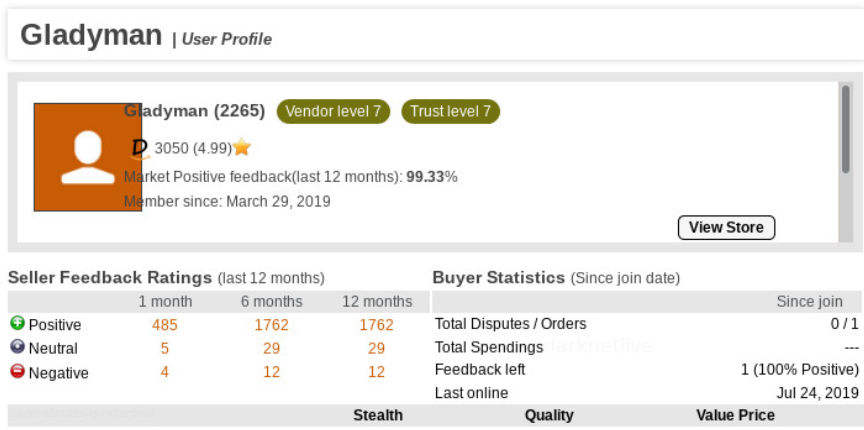
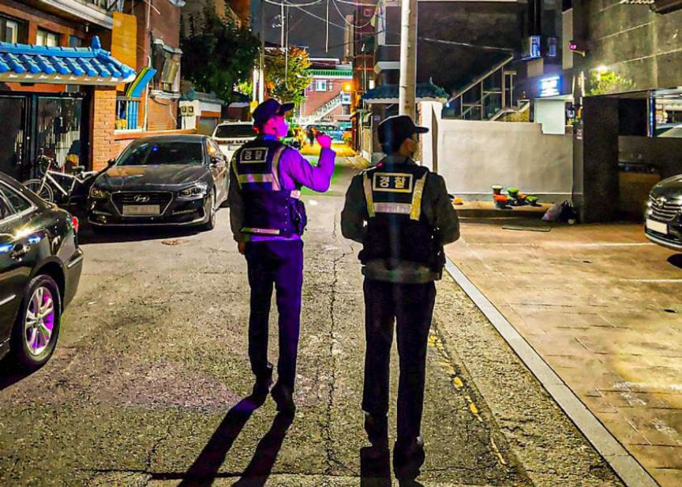
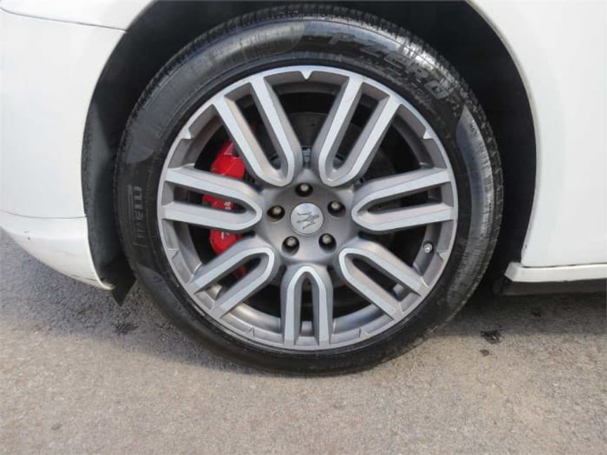
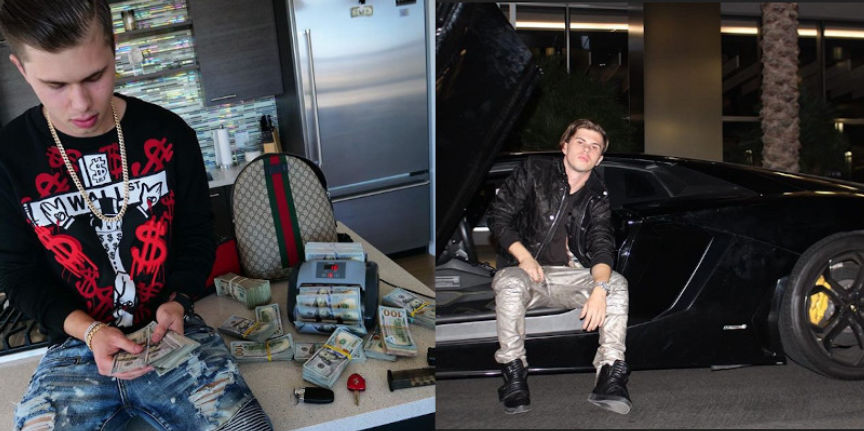
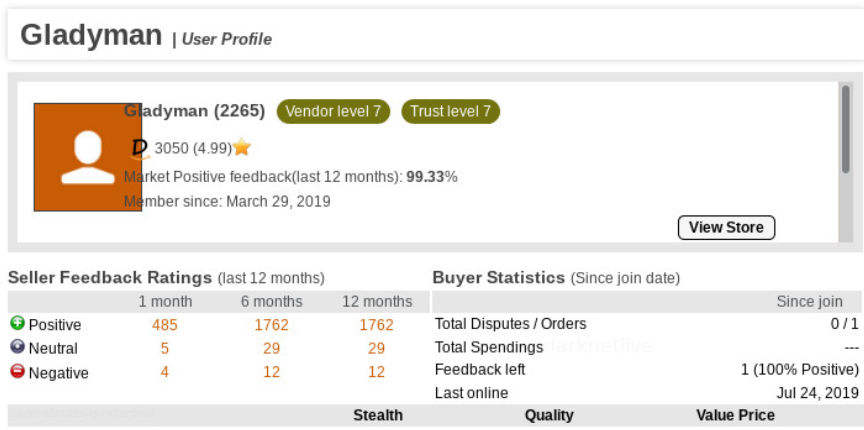
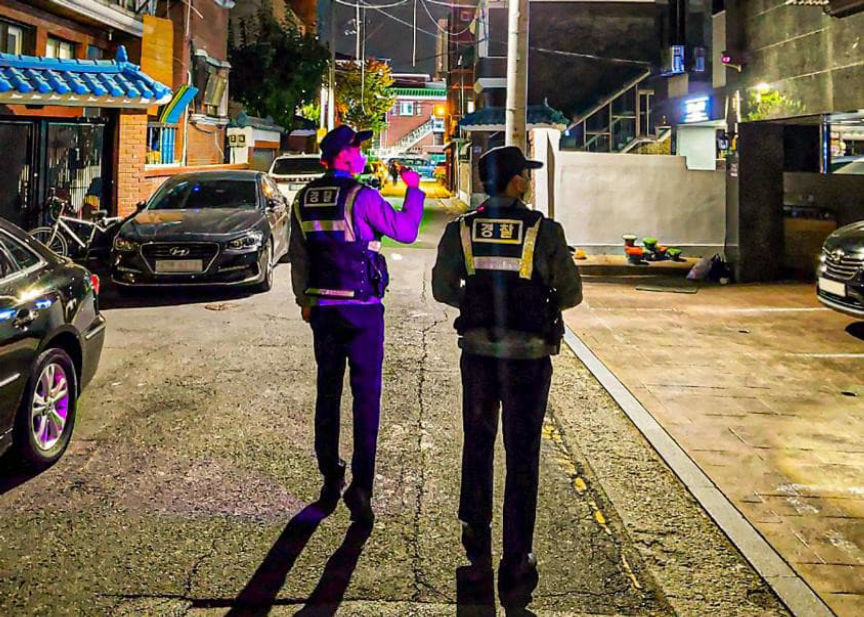
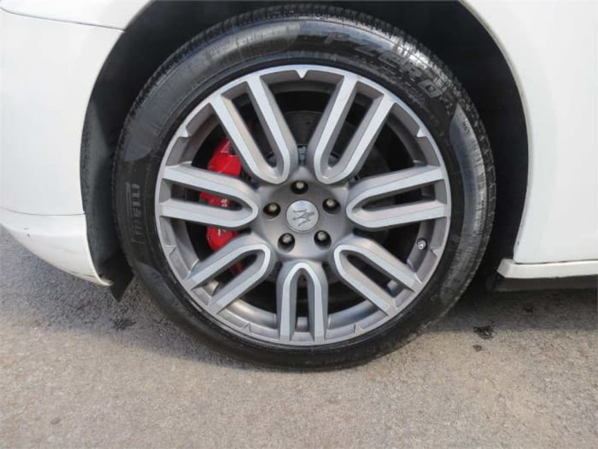
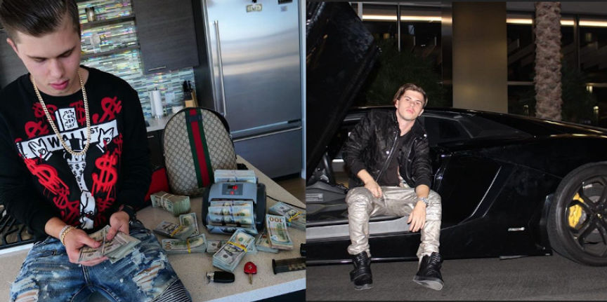

NJ Town Auctioning a Maserati Seized from a Fraudster
A town in New Jersey is auctioning off a 2015 Maserati Quattroporte seized from a convicted fraudster. The fraudster bought a “significant amount of stolen personal identifying information via the dark web,” police said.

As one user on Jalopnik commented, So, the answer to “why does this town have a fancy car to sell?” is:
“Dumbass Thief couldn’t live low and people started wondering how some weird unemployed guy living in his mom’s basement could afford a Maserati. And why it was “gifted to him” from 4 people that were all filing complaints about identity thief.”

Per DailyVoice.com:
Working with others, [Ralph Taylor] bought a “significant amount of stolen personal identifying information via the dark web, including bank account information and online security question answers,” a complaint on file in federal court in Newark says.
Taylor used the information to access victim accounts in New Jersey, New York, and elsewhere, the complaint says.[Taylor] and her cohorts went to the victims’ banks and impersonated them to withdraw money, it says. They also called to request wire transfers.
(The pronoun change in the above quote is apparently the result of a transition that took place while in police custody.)

The Maserati is a 3.0L V6 which seems underwhelming. I thought the modern Quattroporte’s had TT V8s.
As far as flexing criminal money goes, OxyGod had much better taste in my opinion.

Of course, he rented all the vehicles in his Instagram pictures.
The Maserati is available on the municibid website.

The Maserati is surprisingly boring, honestly.
As one user on Jalopnik commented, So, the answer to “why does this town have a fancy car to sell?” is:
“Dumbass Thief couldn’t live low and people started wondering how some weird unemployed guy living in his mom’s basement could afford a Maserati. And why it was “gifted to him” from 4 people that were all filing complaints about identity thief.”

Wyatt Pasek poses with cash and a rental supercar
Per DailyVoice.com:
Working with others, [Ralph Taylor] bought a “significant amount of stolen personal identifying information via the dark web, including bank account information and online security question answers,” a complaint on file in federal court in Newark says.
Taylor used the information to access victim accounts in New Jersey, New York, and elsewhere, the complaint says.[Taylor] and her cohorts went to the victims’ banks and impersonated them to withdraw money, it says. They also called to request wire transfers.
(The pronoun change in the above quote is apparently the result of a transition that took place while in police custody.)

Wyatt Pasek poses with cash and a rental supercar
The Maserati is a 3.0L V6 which seems underwhelming. I thought the modern Quattroporte’s had TT V8s.
As far as flexing criminal money goes, OxyGod had much better taste in my opinion.

Wyatt Pasek poses with cash and a rental supercar
Of course, he rented all the vehicles in his Instagram pictures.
Wyatt Pasek poses with cash and a rental yet again
The Maserati is available on the municibid website.